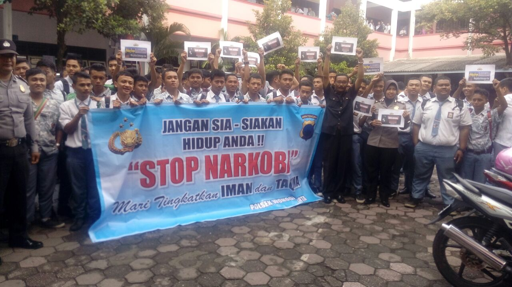

SMK PANCASILA 1 WONOGIRI
Jl. Jendral Sudirman nomor 106, Wonogiri
Telp. (0273) 321028
Jl. Jendral Sudirman nomor 106, Wonogiri
Telp. (0273) 321028
Tribratanews-polreswonogiri.com — Operasi bersinar candi 2016 dalam memberantas narkoba berdasarkan arahan dari Kapolres Wonogiri AKBP Windro Akbar panggabean, SIK jajaran kepolisian wonogiri kota mengadakan sosialisasi dan penyuluhan pada sekolah SMK Pancasila 1 wonogiri setelah mengikuti ujian UN. Tujuan dari penyuluhan ini diadakan disekolah, karena maraknya peredaran narkoba dikalangan pelajar sehingga instansi pendidikan merupakan sasaran utama diadakannya penyuluhan ini untuk menyelamatkan para generasi muda.
Kapolsek Wonogiri kota melalui Kasubbag Humas Akp Gunawan, SH mengatakan “Generasi muda adalah tonggak dari penerus bangsa, jadi jangan sampai narkoba merenggut masa depan para remaja. Kita mengerti akibat dari perbuatan kita dan dampak dari pebuatan kita bagi irang sekeliling”. Siswa dan siswi serta sebagian majelis guru juga diingatkan tentang jenis-jenis narkoba serta ancaman dan sanksi apabila mengkonsumsi narkoba.
Sosialisasi dan penyuluhan ini diadakan oleh Kapolsek Wonogiri kota bersama Kanit intel Aiptu sumarlam, Bripka fitri agus dan Bripda maya anugerah. Serta dibantu oleh pihak sekolah, sehingga acara penyuluhan ini berjalan lancar.
(Iwan – Paur Humas Res Wi)